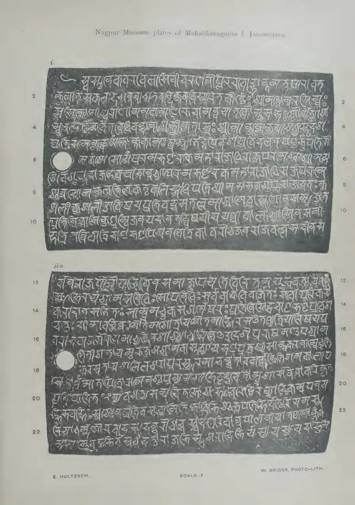
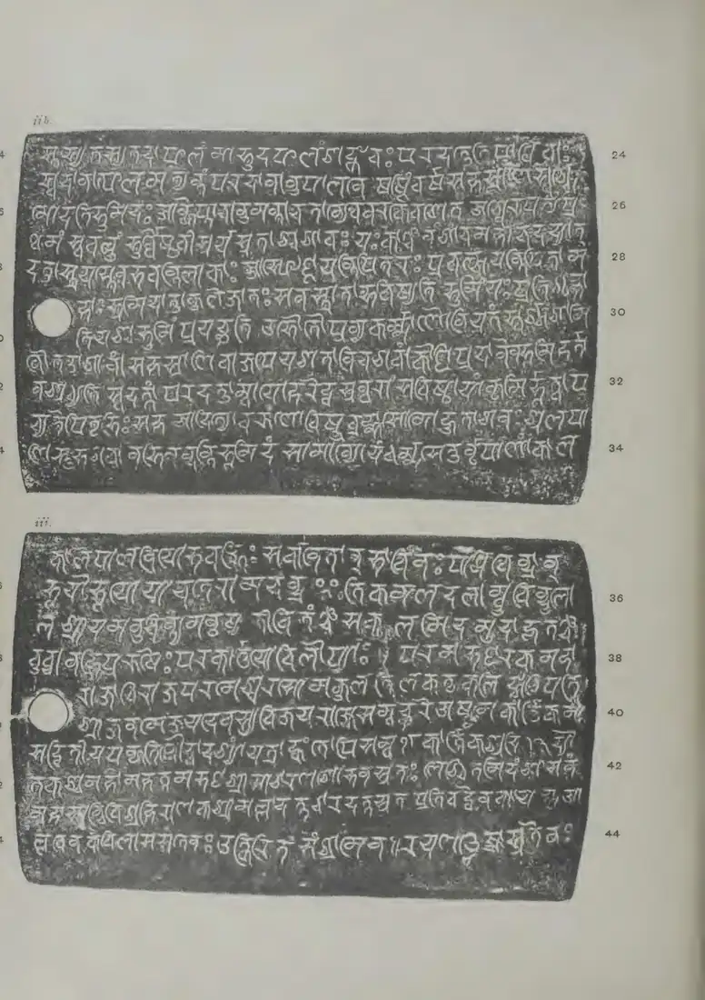

Nâgpur Museum plates of Mahâbhavagupta I. Janamêjaya
NAGPUR MUSEUM PLATES OF
MAHABHAVAGUPTA I. JANAMEJAYA.
BY PROFESSOR E. HULTZSCH, PH.D.; HALLE (SAALE).
Mr. Venkayya sent me one set of ink-impressions of this unpublished inscription, with the following remarks:—
“The Curator of the Nāgpur Museum says, the locality from which the plates containing this inscription came is unknown. There are three copper-plates, of which only the second bears writing on both sides. The plates are broader in the middle than at the top or at the bottom.
1 This probably refers to the rice collected by the Jaina mendicants in begging from door to door. It is customary even now in India to give a ‘haadful of rice’ to beggars that call at the door. This seems to be the reason why such rice is called kaiṣ-akki.
2 Amritapađi in the sense of ‘rice offering’ is not given in Kittel’s Kannada-English Dictionary. It corresponds to the amudupađi of Tamil inscriptions.
3 Guttu appears to be used here in the sense of guttigedāra, ‘a lessee.’ Or, the meaning might be that Biliyarasa’s lease, (viz.) 20 mūđe of rice, was to be collected from (his tenant) Jinnappa.
4 Compare Dr. Fleet’s remarks on bālasidor on p. 51 above.
5 Setī-betṭu, or more correctly setīi-betṭu, means ‘the betṭu of the merchant.’ According to Mr. Sturrock’s South Canara Manual, Vol. I. p. 85, betṭu means: ‘a walled enclosure with a colossal statue.’ The word here cannot be meant for the fiscal term betṭ—a land capable of producing one crop of rice annually—(ibid. p. 122); for, in this case the backyard (hittilu) mentioned in connection with it would not be intelligible.
At the broadest part they measure nearly 9 inches. Their height varies from 5" to 5". They are held together by a ring, which has been cut by me with the permission of the Curator. The ring, which is not quite circular, measures about 3" in diameter. Its ends are secured in the base of a circular seal measuring 1" in diameter. The seal bears, in relief on a counter-sunk surface, an image of Lakshmī, seated apparently on a lotus and flanked by two lampstands, of which the one on the left is not quite distinct. The lotus extends on both sides to the height of the shoulders of the goddess and is surmounted on each side by an elephant with uplifted trunk. This is the usual representation of the goddess Gajalakshmī. The base of the seal is slightly damaged, and a nail seems to have been driven in to fix the seal to the ring."
The inscription records a grant of land, made by king Mahābhavagupta (I.) surnamed Janamējaya in the eighth year of his reign. The alphabet resembles that of the grants of the same prince which have been published by Dr. Fleet. Initial o and au occur in Óðra (l. 16), ojjhá (l. 44) and Auathya (l. 15), and the rare letter jh occurs in ojjhá (l. 44). The letter t of paṭu (l. 5) differs in shape from that of kuṭumvi (l. 10), etc. The group ṭta is throughout written as ṭa, except in ásphóṭtayanti (l. 28), where it is wrongly employed. A final form of t is used in samvat (l. 41), and the viráma in dadyát (l. 27), vráhman'in (l. 9), étán and párthivéndrán (l. 35); elsewhere the viráma is omitted. The decimal figures 1, 2 and 8 occur in l. 41.
The language is Sanskrit. There is one verse in ll. 3-6, and 11 of the customary verses occur in ll. 23-38; the remainder of the record is in prose. The visarga is omitted in several cases. The rules of Sandhi are neglected in śrímán (l. 4), °chchhinmaḥ and °ñgirasa (l. 15), °dhyáyiné (l. 16), dadyát (l. 27) and ashṭamé (l. 40). The orthography is defective in many respects. The vowel i is mixed up with í, and u with ú. In nópúra (l. 1) for núpura and dyótaka (l. 41 f.) for dútaka, ó is used instead of ú. The vowel ri and the syllable ri are mixed up in samáhatri (for °hartṛri) and sannidhátri (l. 11), tridaśa (l. 4) and Trikalingu (ll. 8 and 39). In krichhna (l. 5) and samvachchharé (l. 40), ts is represented by chh. The dental n takes the place of the lingual n in punya (ll. 19 and 30), hiranya (l. 20), grihnáti (l. 29 f.) and Saṅgráména (l. 44). Of sibilants, s is used for sh in nisiddha (l. 14), and ś for s in śalila, puraśara, śama (l. 18) and vaséta (for vasét, l. 26). A y is inserted in śákhyá (l. 16) for śákhá, and dyótaka (l. 41 f.) for dútaka. The consonant b is always represented by v, which must have been pronounced as b just as in Bengali. This may be concluded from the spellings sámvra (l. 14) for sámra, támvra (l. 19) for támra, °dattám=vá (l. 32), samvachchharé (l. 40) and samvat (l. 41). Other irregularities are vuvdhá (l. 38) for buddhvá, triyárishaya (l. 15) for tryárshéya, Kaivilása and utkirita (l. 44) for Kailása and utkiṛṇa.
The inscription opens with the words: “Óm. Hail! From the prosperous Murasiman, where flights of merry pigcons rise up at the sound of the auklets of many beautiful maidens. (and) whose fame is spread by bards coming from all quarters.” Another grant of Mahābhavagupta I. is dated from the same Murasiman, which is there spelt with a long ú in the first syllable,—apparently by mistake, as Mura is a well known word, and as ú is used erroneously for u in many other instances.1 The next word of the same grant, -samávásita, may be meant for -samávásitaḥ. As, however, it would be difficult to imagine that the king resided at one place and issued his grant from another, I prefer to correct -samávásitát and to take the following word kaṭaka to mean ‘a camp,’ and not the city of Cuttack.2 Thus the inscription of the sixth year is dated “from the prosperous camp of victory, pitched at Murasiman.” With the
1 Above, Vol. III. p. 341.
2 Professor Kielhorn kindly refers meto three very similar instances in inscriptions from Northern India :—
1.—Ep. Ind. Vol. II. p. 360, text line 6 f.—śrímad-Vishupur-dódśita-śrí-vijāya-kaṭaké.
2.—Ibid. Vol. IV. p. 121, text line 28,—śrí. Vadaviha-gráma-samávásita-vijāya-kaṭaké.
3.—Ibid. Vol. II. p. 309, text line 33, and Vol. V. App. p. 58, note 4,—Prayága-samávásita-śrímad-vijāya-kaṭakat.
same alteration, the three inscriptions of the 31st year1 are dated “from the prosperous camp of victory, pitched at the prosperous Āráma.”
Lines 3-6 contain a verse which celebrates the king under his surname Janaméjaya—contracted into ‘Janméjaya’ for the sake of the metre—and states that he claimed descent from the race of the Moon (Sômv-vamśa). The same verse occurs in the grant of the sixth year, where it is placed at the end of the whole document (ll. 43-45).
Then follows the preamble of the grant itself (l. 6 ff.) :—
“This Paramabhatṭāraka Mahárájádhirája Paramésvara, the ornament of the race of the Moon (Sôma-kula-tilaka), the lord of Trikaliñga, the glorious Māhâbhavaguptarájadéva,—who meditates at the feet of the P. M. P., the glorious Maháśivaguptarájadéva,—being in good health, having worshipped the Bráhmaṇas in the village of Satallamâ attached to the Kaśalôdâ district (vishaya), commands the ryots residing in that (village), the inhabitants of that district at the time, (and) all servants of the king, (viz.) collectors, attendants, irregular and regular soldiers, spies, staff-bearers, eunuchs, favourites of the king, etc.”
The king then states that he granted this village (viz. Satallamâ, l. 9) by a copper-plate edict (támra-sásana, l. 19) “to the Bhatṭaputra Sânthakara, son of Dhṛitikara (l. 17 f.), who belonged to the Gautama gôtra, who had the three pravaras of Gautama, Âñgirasa and Autathya, who studied the Vâjasanéyi-Mâdhyandina śákhâ, who had immigrated from the village of Purushamaṇdapa in the Ôdra country (déśa), (and) who resided in the village of Murujuñga.” Of the proper names mentioned in this passage I can identify none besides Ôdra, which is the Sanskrit form of Ođđa, i.e. Orissa.3
11 verses from the Dharmaśástra are quoted in ll. 23-38. Then follows the date of the grant :—“In the victorious reign of the P. M. P., the ornament of the race of the Moon, the lord of Trikaliñga, the glorious Janaméjayadéva,—in the eighth year, in the second half of the month of Kârttika, on the twelfth tithî.—and in figures : Samvat 8, Kârttika śudi 12.” The Dútaka was the Mahámahattama Bhatṭa Sâdhâraṇa, son of Sôbhana (l. 41 f.). This person must be the same as the donee of three other grants of Mahâbhavagupta I., where he is called the Bhatṭa Mahattama Sâdhâraṇa, son of Bhatṭa Sôbhana,4 and he seems to have been the prime-minister of the king.5
According to ll. 42-44, “this edict was written by the Káyastha Âllava, son of Kailâsa, who was attached to the Mahásândhivigrahî Ráṇaka Mallâdatta, son of Dhâradatta.” The same minister is referred to in the remaining published inscriptions of Mahâbhavagupta I. In the three grants of the 31st year he is called Malladatta,6 while the grant of the sixth year has Mallâdhâradattasuta,7 which, as the new grant suggests, is meant for Mallâ[datta], son of Dhâradatta.
The inscription ends with the statement that it was engraved by Saṅgrâma, son of Rayaṇâ-ojjhâ.8
1 Above, Vol. III. p. 347, text line 1.
2 The other grants of Mahâbhavagupta I. omit the word mahâ before Śivagupta's name.
3 Ôdra-déśa is mentioned also in an inscription of Maháśivagupta II.; above, Vol. III. p. 353, text line 33.
4 Ibid. p. 348, text line 12 f.
5 Ibid. pp. 345 and 350.
6 Ibid. p. 350.
7 Ibid. p. 344, text line 42.
8 Compare ibid. p. 212, note 2. According to Kittel's Kannađa-English Dictionary, ćja (or vája) means (1) ‘a teacher,’ and (2) ‘an artificer.’ In Tamiľ we have the forms uvachcha and ćchcha; see South-Ind. Inscr. Vol. II, p. 293, note 2. The word is evidently a tadbhava of upádhyâya; compare Ind. Ant. Vol. XX. p. 393, note 23. A similar honorific term, also applied to artisans in Southern India, is chádrya; see above, Vol. VII. p. 168, note 8.
Plate 1 is bound after this page.
Plate 2 is bound after this page.
TEXT.1
First Plate.
1 श्री2 स्वस्थनेकवरविलासिनोचरणनोपूररवोद्भान्तमत्तपारावत-3
2 कुलात4 सकलदिगन्तरागतवन्दिजनविस्तारितकीर्त्तः श्रीमतो मुरसिमः5 [1*]
3 अस्ति क्षोणीश्वराणाममलमण्णिरुचामन्वयात6 कौस्तुभाभः शौर्यत्वागा-
4 7म्वुरा[शि]र्विरचितविधिवद्दान(१)शुभ्रीकृताभः [1*] 8श्रीमान्जन्मेजयाख्यस्तृदश-9
5 पतिसम[:*] क्वक्कूगां10 भोक्तकामः प्रख्यातद्वेषिवंशप्रविदलनपटुर्भुपति11 सो-
6 मवंशे [॥*] सोयं 12परमभटारकमहाराजाधिराजपरमेश्वरश्रीमहा-13
7 शिवगुप्तराजदेवपांदानुध्यात्परमभटारकमहाराजाधिराजपरमे-14
8 श्वरसोमकुलतिलकतृकलिङ्गाधिपतिश्रीमहाभवगुप्तराजदेवः15 कु-
9 शली 16कशलोडाविषयप्रतिवडसतल्लमायामे 17व्राह्मणान् सम्पुज्य18 त-
10 व्यतिनिवासिकुटुम्बिजनपदान19 तद्विषयीययथाकालाध्यासिन[:*] समा-
11 20हत्रिसन्निधात्रिचाटभटपिशुनवेत्रिकावरोधजनराजवल्लभादीन21 स-
Second Plate; First Side.
12 र्वान22 राजपादोपजिविन23 समाज्ञापयति [1*] विदितमस्तु भवत[ं] यथा-
13 स्माभिरयं याम[:*] सनिधिः सोपनिधिः 24सर्ववाधाविवर्जितः सर्वोपरिकर-
14 करादानसहितः 25साम्रमधुक[:*] सगर्तोषरः 26प्रतिनिसिद्धचाटभटप्रवेश-27
15 चतुःसोमावच्छिन्नः28 गौतमगोत्राय गौतमाङ्गिरसश्रौतथ्यत्रियारिषयप्र-29
16 वराय 30वाजसनेयेमाध्यन्दिनशाख्याध्यायिने31 श्रोड्देशे पुरुषमण्डपयाम-
17 32विनीर्गताय मुरुजुंगयामवास्तव्याय 33भटपुत्रश्रीसान्यकरनाम्ने धृति-
18 करसुताय 34शलिलधारापुरस्सरमाचन्द्रतारकार्क्षेत्रितिशमकालाप-35
| 1 From a set of ink-impressions supplied by Mr. Venkayya. | 2 Expressed by a plain symbol. | |
| 3 Read °नूपुर°. | 4 Read °कुलात्. | 5 Read °सीमः. |
| 6 Read °यात्. | 7 Read °म्वुराशि°. | 8 Read श्रीमाञ्च°. |
| 9 Read °स्त्रिदश°. | 10 Read कृत्स्नगां भोक्तु°. | 11 Read °र्भूपतिः. |
| 12 The र of भटारक is corrected by the engraver from क ; read °भट्टारक°. | ||
| 13 The र of °श्वर was inserted subsequently. | 14 Read °पादानुध्यातपरमभट्टारक°. | |
| 15 Read °त्रिकलिङ्गा°. | 16 Read °प्रतिवड°. | 17 Read ब्राह्म°. |
| 18 Read सम्पूज्य. | 19 Read °कुटुम्बिजनपदान्. | 20 Read °हर्तृसन्निधातृ°. |
| 21 The ध of °वरोध is written on an erasure ; read °दीन्. | 22 Read °र्वान्. | |
| 23 Read °पजीविनः. | 24 Read °वाधा°. | 25 Read साम्न°. |
| 26 Read °निषिद्ध°. | 27 Read °प्रवेशशतु°. | 28 Read °च्छिन्नी. |
| 29 Read °रसौतश्यच्यार्षेय° ; compare above, Vol. III. p. 45, note 4. | 30 Read वाजसनेयि°. | |
| 31 Read °शाखाध्यायिन. | 32 Read विनिर्ग°. | 33 Read भट्टपुत्र°. |
| 34 Read सलिल°; the ssa of °पुरस्सर° is written as ssa. | 35 Read °त्रितिसमकालीप°. | |
19 भोगार्थं मातापित्रोरात्मनश्च ¹पुन्ययशोभिहडये ²ताम्ब्रशासनेनाकरिकृत्य³
20 प्रतिपादित इत्यवगत्य ⁴समुचितभोगभागकरहिरन्यादिकमुपनय-⁵
21 द्विभवद्भिः⁶ सुखेन प्रतिवस्त्व्यमिति [¹*] भाविभिश्च भूपतिभिर्दत्तिरियमस्म-
22 दिया⁷ धर्मगौरवादस्मदनुरोधाच्च ⁸सदतिरिवानुपालनीया [¹*] तथा चोक्तं ध-
23 र्मशा[स्त्रे] [²*] ⁸वहुभिर्वसुधा दत्ता राजभिस्सगरादिभियंस्य¹⁰ यस्य यदा
भुमि-¹¹
Second Plate ; Second Side.
24 स्तस्य तस्य तदा फलं [²*] मा भुदफलंशङ्का¹² वः परदत्तेति
पार्थिवाः [¹*]
25 स्वदानात्फलमत्यन्तं परदानानुपालने [²*] षष्टिं वर्षसहस्राणि स्वर्गे
26 मोदति भुमिदः¹³ [¹*] आक्षेप्ता चानुमन्ता च तान्येव नरके वशेत¹⁴
[²*] अग्नेरप[त्यं] प्र-
27 थमं स्ववर्ण्य¹⁵ भुर्वैश्णवी ¹⁶ सुर्यसुताश्च गावः [¹*] यः काञ्चनं गां च महीं
च दद्यात्¹⁷
28 दत्तास्त्रयस्तेन भवन्ति लाकाः¹⁸ [²*] आस्फोटयन्ति¹⁹ पितरः प्रवला(य)न्ति
पिताम-
29 हाः [¹*] भुमिदात्ता²⁰ कुले जातः स नस्त्राता भविष्यति [²*] भुमि²¹
यः प्रतिगृह्णा-²²
30 ति यश्च भुमि²³ प्रयच्छति [¹*] उभौ तौ ²⁴ पुन्यकर्म्माणौ नियतं स्वर्गगामि-
31 नौ [²*] तडागानां सहस्राणि²⁵ वाजपेयशतानि²⁶ च [¹*] गवां कोटिप्र-
दानेन भूमिहर्ता
32 न शुध्यति [²*] सदत्तां परदत्ताम्बा²⁷ यो ²⁸ हरेहसुन्धरां [¹*] स
विष्ठायां क्वमिर्भूत्वा प-
33 चते पितृभिः सह [²*] आदित्यो वरुणो विष्णुब्रह्मा²⁹ सोमो हुताशनः
[¹*] ³⁰शुलपा-
34 णिस्तु³¹ भगवानभिनन्दन्ति भूमिदं [²*] सामान्योयं धर्मसेतुर्नृपाणां काल³²
¹ Read पुण्य°.
² Read ताम्ब°.
³ Read °करीकृत्य.
⁴ The ग of भाग was inserted subsequently.
⁵ Read °हिरण्या°.
⁶ Read °द्विभवद्भिः.
⁷ Read °दीया.
⁸ Read स्वदत्ति°.
⁹ Read बहुभि°.
¹⁰ Read °भिः । यस्य.
¹¹ Read भूमि°.
¹² Read भूदफलंशङ्का.
¹³ Read भूमिदः.
¹⁴ Read वसेत्.
¹⁵ Read सुवरणं भूर्व्य°.
¹⁶ Read सूर्य°.
¹⁷ Read दद्याद्.
¹⁸ Read लोकाः.
¹⁹ Read आस्फोटयन्ति.
²⁰ Read भूमिदाता.
²¹ Read भूमिं.
²² Read °गृह्णाति.
²³ Read भूमिं.
²⁴ Read पुण्य°.
²⁵ Read सहस्रेण.
²⁶ Read °शतेन.
²⁷ Read °दत्तां वा.
²⁸ Read हरेत वसु°.
²⁹ Read विष्णुब्रह्मा.
³⁰ Read भूल°.
³¹ Read °णिश्च.
³² Read काले.
Third Plate.
35 काले पालनियो1 भवद्भिः [*] सर्वानेतान् भाविनः पार्थिवेन्द्रान्
36 भूयो भूयो याचते रामचन्द्र[: *] इति कमलदलाम्बुविन्द्लो-2
37 [लं]3 श्रीयमनुचिन्य4 मनुष्यजीवितंच्च5 [*] सकलमिदमुदाह[तं]च्च5
38 वृधा6 न हि पुरुषैः परकीर्त्तयो विलोप्याः [*] परमभटरकमहा-7
39 राजाधिराजपरमेश्वरसोमकुल[ति]लकतृकलिङ्गाधिपति-8
40 श्रीजनमेजयदेवस्य विजयराज्ये सम्वच्छरे9 अष्टमे कार्तिकमा-
41 सद्दितीयपक्ष10 तिथौ द्वादश्यां यत्राङ्गतोपि सम्वत्11 ८ कार्तिक शुदि १२
[*] द्यो-12
42 तकश्च13 महामहत्तमभटश्रीसाधारण[:*] शोभनसुतः [*] लिखितमिदं शासनं
43 महासान्धिविग्रहिराणकश्रीमल्लादत्तधारदत्तसुतप्रतिवडेन14 का[य]स्यआ-
44 ल्लवेन कै(वि)लाससुतेन:15 उत्किरितं16 संग्रामेन17 (II) रयणाश्रोक्कासुतेन.18

